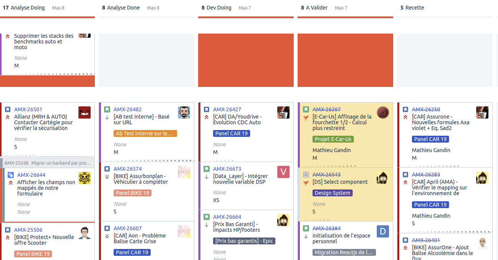

Kanban Pitfalls @ lesfurets.com
Mathieu Gandin
Le delivery chez lesfurets.com
-
2012 :
Spring Scrum mensuel
12 releases
(build 15 minutes et selenium 1 heure)
-
2013 :
Sprint scrum hebdo
45 releases
(build 3 minutes, release 1 jour)
-
2014 - 2016 :
Flux Kanban livraison quotidienne
208, 217, 220+ releases
(release 2 heures)
-
2017+ :
Release partielle, release par feature
Quelques freins à notre delivery
- Feature Branching: Changements de branche, rebase entre branche
- Déploiements longs: Rallongent le temps de certains feedbacks
- Interaction avec l'UX: Validation du design et implémentation
- Recette avec un assureur: Aller-retours pour valider l'exactitude du mapping
Toute transaction économique engendre des coûts préalable à sa réalisation : Coût de transaction
Symptômes
Coût de transaction : Engendre des délais
- Tâches bloqués
- Files d'attente entre deux étapes
- Visibles dans nos Kanbans
Coût de transaction : visible dans Jira

Quelques solutions
- Changements de branche: Plusieurs clones du projet, meilleurs postes de développement
- Déploiements longs: Refactoring de notre Pipeline Jenkins 2
- Interaction avec l'UX: Design Systems et changements de notre process pour impliquer les développeurs en amont
- Recette avec un assureur: Extranet partenaire